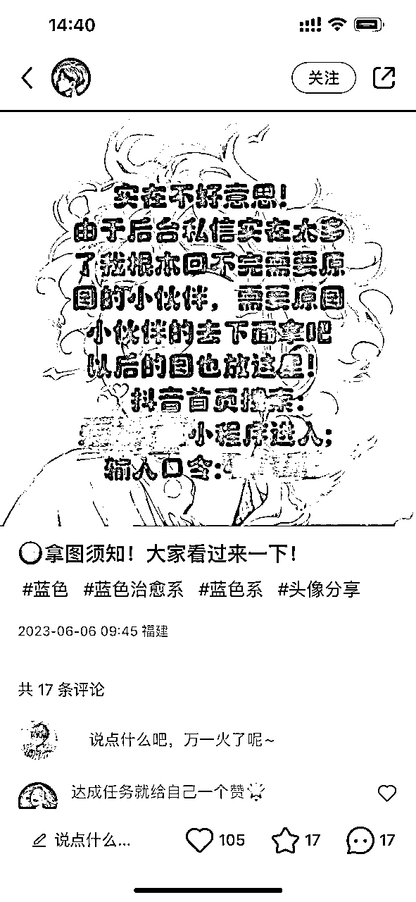

来源：https://ry5hwpuf7b.feishu.cn/docx/LLvLdO3s8oHRoTxniOscOKDanEd
《AI变现异常值案例库，5种方向10个案例，副业项目灵感启发》
第一期先分享5种方向，10个案例
1.宝宝起名号
2.AI热点资讯号
3.头像壁纸号
4.小说推文号
5.流量收益号
大家好，我是吴东子
我的所有资料都在公众号「吴东子AI」
本来想写一篇AI变现方法论，把AI现有的技术方向，应用场景，变现案例都整理出来
但实际写的时候发现难度太大了，因为人工智能这个话题太大了
小到把文字排版成PPT好像也能叫AI，大到汽车领域的无人驾驶技术，以及苹果前些天发布的眼镜用到的视觉追踪技术也叫AI
做不到相互独立和完全穷尽，就算强行用一个分类把他们分类了，也会失去“分类”本身所具备的指导意义
所以只好把AI变现方法论这个大话题先放一放，等我具备足够多的信息时再给大家补上
于是我转变为写【AI变现异常值案例库】，侧重于副业项目这款
把我观察到的案例分享给大家，不会做过多的拆解和分析，更多的是偏向于灵感启发
思考这里面的案例有没有你能做的，能复制的，能放大的
可能啥用没有，也可能黄金万两
不知道大家会不会对这个感兴趣，如果感兴趣的人多的话会继续做第二期
严禁抄袭搬运，势必追诉到底！
用ChatGPT把原有的起名号再做一遍
东子的思考：


通过“素人视角”（用第一人称手机拍摄屏幕）
讲AI今天又有多牛逼，又怎么怎么样了
一定程度上引发观众焦虑，然后吸引关注
东子的思考：
这种视频类型和账号，是目前AI账号里流量最大的
可以用来快速起号，结合自己或者别人的后端产品去变现
教程可以看这个
东子的思考：
小白可以直接上手做的副业项目，变现路径清晰，简单易上手，不需要占用过多时间，但上限相对较小
如果你手上没项目的话，不妨先干起来，总好过天天观望



以前的小说推文基本都是通过放解压素材和游戏素材来呈现
现在通过SD文生图，做到声画匹配，让观众体验更好一点
东子的思考：
1.清楚小说推文项目的玩法，自己做账号
2.本身有团队在跑这个项目，是不是可以给团队做内容升级
3.素人是不是可以掌握SD技术，然后做外包，帮别人的文案生成对应的图片
（用SD做小说推文的教程正在写，后续写完会分享出来）


百家号新推出的活动，鼓励用AI写作，并且有创作激励
可以利用GPT和AI绘画大量产出薅流量收益
圈友的文章
东子的思考：
百度最近的声量很大，但不是说话大声就有用的，百家号这个产品流量还是太小了
但也许大家都是我这个狭隘的想法，反而说不定里面可以挖掘出一些很好的赚钱机会

东子的思考：
微信生态可能会成为一个很大的趋势
我前段时间用视频号橱窗的体验也很好
如果觉得微信生态会是一个风口的朋友，不妨试着先从公众号入局
1.最直接的就是用GPT和AI绘画去写公众号，因为产出飞快，所以可以搞多个号薅流量收益

2.骚操作一点的还可以在已有内容的基础上不变，但把封面变成各种美女
（因为最近公众号放出了部分流量，让内容变成了推荐形式，所以利用美女图片吸睛获得更高的阅读量，直接用网红图也不是不行，怕风险的话可以用AI美女）

不过这里面最赚钱的，还得是卖课啊
左为私域卖课，右为公域卖课

东子的思考：
在卖一件产品之前，一定要思考清楚用户真正的需求
绝大多数人卖AI的课都以为是用户要学AI
用户真的要学AI吗？
扯蛋，目前AI很多应用还没法“真正”结合到自己的工作中
注意我说的是真正，不是以为是，感觉是，而是真正应用
用户以为的需求：AI很火，我要学AI，驾驭AI，成为人上人
用户真正的需求：AI很火，我很TM焦虑啊，我要买一个课来解决自己心中的焦虑
用户有时候甚至意识不到他们自己真正需求是什么
所以为什么“李”的人工智能课，讲得全是偏理论的东西，还那么多人愿意买
大家都说他割韭菜，真的是如此吗？我不这么认为
我觉得其实是 韭菜们自己都想要被割，“李”只是把镰刀放在了那里罢了
以上这段话很真实，至少我现在还愿意写一些真话，大伙听得进就听，听不进的话一定是我说错了
好了，这就是这篇文章的内容，如果AI变现异常值案例库感兴趣的话
可以点赞或者评论让我知道大众的反馈，反响好的话会继续做第二期
好了，以上就是我们这篇文章的全部内容
如果你对AI感兴趣的话，可以关注我的公众号：吴东子AI，也欢迎分享给你身边想学AI技术的朋友
里面有我之前发过的所有文章，之后也会持续给大家更新实用的AI干货教程
我是吴东子，用奶奶都能听懂的方式，分享可以落地实操的干货，我们下篇文章再见！